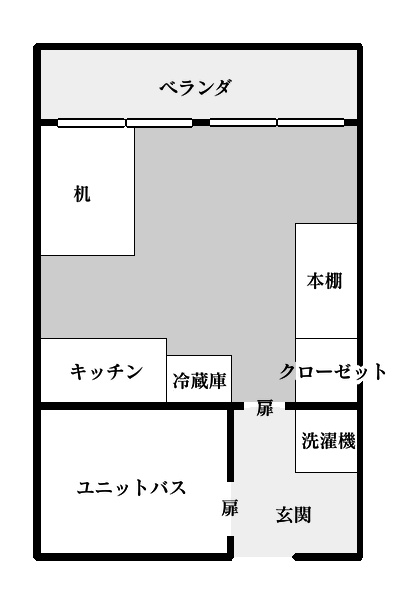

1．はじめに
このシナリオは現代日本を舞台としている。
伝承「肉人」にクトゥルフ要素を申し訳程度に組み込んだような話となっている。シナリオ「もっと食べたい」の後日譚のような位置づけだろう。
戦闘は基本的に発生しない、依頼型で探索中心のシナリオである。
導入で もの探しの依頼 を受けるため、探索者のうち1人以上は依頼を受ける立場の者であることが好ましい。
・推奨人数：1～4名
・プレイ時間：5時間程度（ボイスセッション）
・本文：
・推奨職業：特になし
・推奨技能：〈目星〉
・準推奨技能：〈精神分析〉〈言いくるめ〉〈説得〉
・備考：人体欠損、軽度の食人描写を含む
シナリオ記載の凡例はこちら
伝承「肉人」にクトゥルフ要素を申し訳程度に組み込んだような話となっている。シナリオ「もっと食べたい」の後日譚のような位置づけだろう。
戦闘は基本的に発生しない、依頼型で探索中心のシナリオである。
導入で もの探しの依頼 を受けるため、探索者のうち1人以上は依頼を受ける立場の者であることが好ましい。
・推奨人数：1～4名
・プレイ時間：5時間程度（ボイスセッション）
・本文：
・推奨職業：特になし
・推奨技能：〈目星〉
・準推奨技能：〈精神分析〉〈言いくるめ〉〈説得〉
・備考：人体欠損、軽度の食人描写を含む
事前のPLへの案内に関して、必要に応じて情報を追加いただきたい。
探索者に探索のモチベーションを設定したい場合、「探索者には、一般に手に入りづらい欲しいものがあること」などの条件を設定し、依頼の報酬をその「欲しいもの」とするとよい。
依頼人であるNPC肉戸は、この世のだいたいすべてを手に入れることができる男だ。
探索者に探索のモチベーションを設定したい場合、「探索者には、一般に手に入りづらい欲しいものがあること」などの条件を設定し、依頼の報酬をその「欲しいもの」とするとよい。
依頼人であるNPC肉戸は、この世のだいたいすべてを手に入れることができる男だ。
シナリオ記載の凡例はこちら
2．KP向け情報
シナリオ背景
とある寺に、「肉人ノ木乃伊」（にくじんのみいら）の名称で保管されていたツァトゥグアの像が、ある犯罪組織によって盗まれ、闇市場に流出、転売先で破損する。奇しくもその破損した像は市場にあらわれ、高級食肉『白封』として取引されることになった。探索者は、「取引に際して発生した事件を追い、『白封』を依頼人のもとにまで届けること」を依頼される。
このシナリオは、依頼の達成/失敗を報告することでエンディングを迎える。
像の危険の対処の有無は、像の所有者の生死に影響する。
迷走しそうであるならば、「依頼を達成すればクリアできる、というわけではない」との表現で伝えるのが好ましいだろう。
簡易時系列
5日前 倉田、『白封』入手
3日前 倉田からの連絡が途絶える
倉田、自宅を出る。倉庫へ
-------
◆ 1日目昼 探索者、肉戸の依頼を受ける
2日目20時 早期達成報酬アップ期限
森永、探索者に連絡
4日目正午 依頼期限
3日前 倉田からの連絡が途絶える
倉田、自宅を出る。倉庫へ
-------
◆ 1日目昼 探索者、肉戸の依頼を受ける
2日目20時 早期達成報酬アップ期限
森永、探索者に連絡
4日目正午 依頼期限
進行フロー
《導入》探索者が森永を介し肉戸の依頼を受ける↓
《探索》倉田の足取り・像について調査
↓
《探索》倉庫にて倉田の発見
↓
《転機》像の対処
↓
《結末》像の対処の有無、依頼の報告
3．主要NPC
（キャラ付けは進行具合やお好みで適当に変更してください）
『白封』が危険なものだと気づき、助けてほしいと思いながらもその危険度の高さから他人を巻き込むことに葛藤している。心根は黒に染まり切れていないらしい。
彼に救いの手を差し伸べるような言動をとると、信頼を得、縋るようにその手を取ることだろう。
『白封』に関して、危険性の説明がきちんとあれば、依頼が達成できないことに納得の上で探索者への報酬も支払われる。
様変わりしてしまった倉田を心配はするが、肉の危険性は理解しようとしない、信じない。
『白封』を届けるという仕事を全うすることが、倉田と請け負った仕事への責任の果たし方だと考えている。
探索者が『白封』を回収したと森永が知れば、自分が届けるから肉を渡すよう促す、もしくは自分も同伴して届けるから今すぐ行こうと強引な姿勢をとるだろう。
危険性の〈説得〉は不可。〈言いくるめ〉に成功で半日ほど時間稼ぎが可能。他、拳で語るなど、使えそうだとKPが判断できる手段であれば時間稼ぎができるだろう。
倉田 玖狼（くらた・くろう）
運び屋（国際ハンドキャリー）。裏社会との繋がりがあり、大きな声では言えないものも運んでいた。
好きな作家は志賀直哉。太宰治の作品は、作者の生前の振る舞いが意識を邪魔して素直に読めないらしい。黒色が好き。
好きな作家は志賀直哉。太宰治の作品は、作者の生前の振る舞いが意識を邪魔して素直に読めないらしい。黒色が好き。
行動指針
食欲に抗っており、ここ数日で正気度がごっそり削られている。『白封』が危険なものだと気づき、助けてほしいと思いながらもその危険度の高さから他人を巻き込むことに葛藤している。心根は黒に染まり切れていないらしい。
彼に救いの手を差し伸べるような言動をとると、信頼を得、縋るようにその手を取ることだろう。
倉庫で発見するから倉田。心中するよりは一人で死ぬことを選ぶタイプ。
肉戸 竹千代（ししど・たけちよ）
肉戸物産代表取締役。権力とお金とお酒と美味しいものが大好き。メディアには顔を出さない。
行動指針
『白封』が実際何なのかは理解していない。肉の話は取引で懇意にしている鴻城月 縁からきいた。『白封』に関して、危険性の説明がきちんとあれば、依頼が達成できないことに納得の上で探索者への報酬も支払われる。
竹千代は「肉人」伝承とも縁のある徳川家康の幼名から。がははと笑う。
黒幕の疑いが出た場合、KPからその疑いを晴らす方向で情報提供することが好ましいだろう。
黒幕の疑いが出た場合、KPからその疑いを晴らす方向で情報提供することが好ましいだろう。
森永 明治（もりなが・めいじ）
弁護士。倉田の親しい友人。倉田の仕事の相棒でもあり、普段は仕事の斡旋や契約等の手伝いを行っている。
行動指針
肉戸に『白封』を一刻も早く届けることを目的としている。そこに、『白封』の危険性の有無は考慮されていない。様変わりしてしまった倉田を心配はするが、肉の危険性は理解しようとしない、信じない。
『白封』を届けるという仕事を全うすることが、倉田と請け負った仕事への責任の果たし方だと考えている。
探索者が『白封』を回収したと森永が知れば、自分が届けるから肉を渡すよう促す、もしくは自分も同伴して届けるから今すぐ行こうと強引な姿勢をとるだろう。
危険性の〈説得〉は不可。〈言いくるめ〉に成功で半日ほど時間稼ぎが可能。他、拳で語るなど、使えそうだとKPが判断できる手段であれば時間稼ぎができるだろう。
人のいい楽天家だが、やっていることは探索者のクリア妨害だというやっかいなキャラ。鬱に理解のない森永。
神話的事象やオカルトを「考えすぎ」「気のせい」で片付けようとする。当人の恐怖心ゆえ、実在を認めたくないのである。
神話的事象やオカルトを「考えすぎ」「気のせい」で片付けようとする。当人の恐怖心ゆえ、実在を認めたくないのである。
鴻城月 縁（こうじょうづき・えにし）
歴史ある小さな流通会社のオーナー。呪術具や古書、骨董品類を、本人の趣味の延長で取り扱っている。
「何か古の邪神に関わる危険物なのは理解できるが、面白そうだから」という理由で肉戸に『白封』の話をしたところ、今回の件が起きた。愉快犯。こいつが悪い。
彼自身は『白封』の持つ危険要素の対処法を知らない。
「何か古の邪神に関わる危険物なのは理解できるが、面白そうだから」という理由で肉戸に『白封』の話をしたところ、今回の件が起きた。愉快犯。こいつが悪い。
彼自身は『白封』の持つ危険要素の対処法を知らない。
行動指針
シナリオの表舞台に出番はないが、ちらほら影は覗く。探索者の動きようによっては表に引きずり出すこともできるだろう。
引きずり出せた場合、「どういう終わらせ方をするか」はKP・PL双方の希望に沿う形にお任せしたい。
思いつかない場合は、探索者の糾弾を機に 鴻城月が反省する/肉戸が動き鴻城月に制裁が加えられる/今回の件が楽しかったと鴻城月が満足し今後の暗躍の心配がなくなる などの形をとるとよいだろう。
思いつかない場合は、探索者の糾弾を機に 鴻城月が反省する/肉戸が動き鴻城月に制裁が加えられる/今回の件が楽しかったと鴻城月が満足し今後の暗躍の心配がなくなる などの形をとるとよいだろう。
4．導入
ある昼下がりのこと、探索者のもとに森永という男が訪れる。
彼は依頼人の代理であり、探索者に依頼内容を伝えにやってきた。
依頼の内容は、行方不明となった高級食肉『白封』を発見し、依頼人まで届けることだ。
なんでも、倉田という男が『白封』を依頼人の元に運ぶ手筈だったのだが、三日前の連絡を最後に失踪してしまったのだそうだ。
前金は1人あたり50万円。達成報酬は1人あたり100万円に加え、探索者各自が希望する物品をひとつ提供することを提示する。
ある程度の物品であれば、金に糸目をつけずに報酬として用意するらしい。
期限は4日目の正午。また、明日の20時までに発見し届けられれば、早期達成報酬として50万円を追加で支払うとのこと。
スキャンダルをさけたいので、この件は他言無用というのが依頼人の希望だそうだ。
探索者が依頼を了承する場合、その場で秘密保持契約への署名が求められる。
探索者ら全員の署名を確認したところで、森永から依頼の詳細が伝えられる。
・『肉戸竹千代』について
〈知識〉〈図書館〉
権力とお金とお酒と美味しいものが大好きだと公言している、豪胆な人物である。メディアには顔を出さないことで有名だ。
彼が社長を務める肉戸物産は、各種事業を多角的に展開している株式会社である。この世のありとあらゆるものを揃える・手に入れることのできる会社として有名だ。
海外にも進出しており、特に日本各地域の名産品のお取り寄せが評判である。
・倉田の居場所の手掛かり
・依頼に関する調査報告方法
・達成報酬の物品について
・探索者が肉戸と直接会話を希望する場合
〈言いくるめ〉〈説得〉など
森永が肉戸に確認を取り、通話を代わる。
・倉田について
・『肉戸竹千代』について
彼は依頼人の代理であり、探索者に依頼内容を伝えにやってきた。
依頼の内容は、行方不明となった高級食肉『白封』を発見し、依頼人まで届けることだ。
なんでも、倉田という男が『白封』を依頼人の元に運ぶ手筈だったのだが、三日前の連絡を最後に失踪してしまったのだそうだ。
前金は1人あたり50万円。達成報酬は1人あたり100万円に加え、探索者各自が希望する物品をひとつ提供することを提示する。
ある程度の物品であれば、金に糸目をつけずに報酬として用意するらしい。
期限は4日目の正午。また、明日の20時までに発見し届けられれば、早期達成報酬として50万円を追加で支払うとのこと。
スキャンダルをさけたいので、この件は他言無用というのが依頼人の希望だそうだ。
探索者が依頼を了承する場合、その場で秘密保持契約への署名が求められる。
探索者ら全員の署名を確認したところで、森永から依頼の詳細が伝えられる。
報酬内容はKP裁量で変えてよい。
こちらの提示する報酬で納得がいかない場合、「依頼を受けた後、報酬の物品を伝える際に直接交渉してくれ」と森永によって肉戸に電話が繋がれる。
その他、肉戸に質問などを行う場合は「肉戸と連絡」を参照。
基本的に、早期報酬期限に肉の危険処理は間に合わない仕様である。
探索者側に早期解決の工夫があった場合は、間に合うこともあるかもしれない。KP裁量で調整いただきたい。
こちらの提示する報酬で納得がいかない場合、「依頼を受けた後、報酬の物品を伝える際に直接交渉してくれ」と森永によって肉戸に電話が繋がれる。
その他、肉戸に質問などを行う場合は「肉戸と連絡」を参照。
基本的に、早期報酬期限に肉の危険処理は間に合わない仕様である。
探索者側に早期解決の工夫があった場合は、間に合うこともあるかもしれない。KP裁量で調整いただきたい。
依頼の詳細
・依頼人について
依頼人の名は『肉戸竹千代』。
各種事業を多角的に展開している株式会社、肉戸物産の代表取締役を務める男性だ。
各種事業を多角的に展開している株式会社、肉戸物産の代表取締役を務める男性だ。
・『肉戸竹千代』について
〈知識〉〈図書館〉
権力とお金とお酒と美味しいものが大好きだと公言している、豪胆な人物である。メディアには顔を出さないことで有名だ。
彼が社長を務める肉戸物産は、各種事業を多角的に展開している株式会社である。この世のありとあらゆるものを揃える・手に入れることのできる会社として有名だ。
海外にも進出しており、特に日本各地域の名産品のお取り寄せが評判である。
〈知識〉は探索者が知っているか、〈図書館〉はその場で調べられるかの判定になる。
・倉田の居場所の手掛かり
探索者に倉田のアパートの住所を伝え、倉田の部屋である「201号室」の鍵を渡す。
アパートの管理人には話が通してあり、部屋にはいつ訪ねてもよいとのことだ。
アパートの管理人には話が通してあり、部屋にはいつ訪ねてもよいとのことだ。
・依頼に関する調査報告方法
探索者の報告は、森永が受け付ける。探索者らに森永の連絡先が伝えられる。
依頼の品を肉戸に渡せる状態になった段階で、森永が探索者らを肉戸のもとへと連れていく手筈となっている。
その他、早期達成報酬期限の2日目20時と、期限である4日目正午には、森永の方から調査状況確認の連絡が入る。
依頼の品を肉戸に渡せる状態になった段階で、森永が探索者らを肉戸のもとへと連れていく手筈となっている。
その他、早期達成報酬期限の2日目20時と、期限である4日目正午には、森永の方から調査状況確認の連絡が入る。
・達成報酬の物品について
報酬の用意のため、事前に肉戸に要望を伝える必要がある。
森永がその場で肉戸に電話を繋ぎ、探索者らに何を希望するのか尋ねる。
森永がその場で肉戸に電話を繋ぎ、探索者らに何を希望するのか尋ねる。
・探索者が肉戸と直接会話を希望する場合
〈言いくるめ〉〈説得〉など
森永が肉戸に確認を取り、通話を代わる。
肉戸は報酬の物品相当額に制限を設けない。肉戸は物流系に伝手があるので、手に入りづらいものの入手にもそれなりに融通が利く。ただし1人ひとつまでだ。
「世界」「あなたの心」など、無茶ぶりなリクエストをされた場合は「悪いが他のものにしてくれ」「わしには愛しの妻が……」と断る形で、他のものを提案してもらおう。
「世界」「あなたの心」など、無茶ぶりなリクエストをされた場合は「悪いが他のものにしてくれ」「わしには愛しの妻が……」と断る形で、他のものを提案してもらおう。
その他、森永から聞けること
・森永について
森永明治、弁護士。倉田に仕事の斡旋や契約等の手伝いをしている。今回、倉田に肉を運ばせる仕事を斡旋したのも森永である。
今回の件はこの仕事をうけようと話を持ちかけた自分のミスだと考えている。『白封』を一刻も早く肉戸に届けなければならないと思っている。
森永は倉田の家に一度訪ねたが、室内には入っていない。 応答がないのを確認した後、アパートの管理人から郵送で鍵を受け取った形である。
今回の件はこの仕事をうけようと話を持ちかけた自分のミスだと考えている。『白封』を一刻も早く肉戸に届けなければならないと思っている。
森永は倉田の家に一度訪ねたが、室内には入っていない。 応答がないのを確認した後、アパートの管理人から郵送で鍵を受け取った形である。
・倉田について
倉田玖狼、国際ハンドキャリー。いわゆる運び屋をしている。森永とは仕事上のパートナーである。かれこれ6年の付き合いになる。今までの彼の仕事ぶりは真面目なもので、持ち逃げしたとは考えにくい。
倉田は輸入業者から『白封』を受け取り、肉戸のもとに運ぶところだった。
最後の連絡で、彼は何かにおびえている様子だったことからも、森永は彼が事件か何かに巻き込まれているのだと考えている。
倉田は輸入業者から『白封』を受け取り、肉戸のもとに運ぶところだった。
最後の連絡で、彼は何かにおびえている様子だったことからも、森永は彼が事件か何かに巻き込まれているのだと考えている。
・『肉戸竹千代』について
肉戸物産代表取締役。森永・倉田のコンビは過去に何度か彼から仕事を請けたことがある。
5．探索
探索について
依頼を受ける手続きが完了する頃には、現在時刻は15時を過ぎていることだろう。森永は探索に同行しない。探索者のみでの探索となる。
連絡先は把握しているため、探索者が希望すればいつでも森永に連絡を取ることができるだろう。
なお、早期達成報酬期限の探索2日目20時と、期限である探索4日目正午には、森永の方から調査状況確認の連絡が入る。
・ 場所指定なし
肉戸と連絡
森永は肉戸の連絡先を知っている。彼を介することで肉戸と連絡することができる。
肉戸の連絡先を知ると、森永を介さずとも連絡が取れるようになる。森永から、肉戸の連絡先を教えてもらうということはできない。
肉戸と懇意になることで、肉戸本人から連絡先を教えてもらうことができるだろう。
肉戸から聞けること
肉戸は、自分の持っている情報に関してのことならば、基本的に探索者の問いかけに答えてくれる。
それ以外のことは「知らない」と答える。
・『白封』について
「どえらいすごい高級肉」で、「もうめっちゃくちゃ美味で貴重」らしい。
「そうと知ったら、この男竹千代、食べるしかないだろう！」とのこと。
眉唾な話だが、食べれば不老不死になれる等の逸話があり、知る人ぞ知る有名な食品なのだとか。
・『白封』は何の肉なのか
詳しい種類は知らないが、鳥の肉だと聞いている。
・入手の経緯
知人から噂を聞いて、興味を持った。
海外からの輸入業者を紹介してくれたのもその人物である。
中国雲南省の山岳地域（任意の場所に変更可）で『白封』が獲れた噂を聞き付け、知人が肉戸にその話をした。
興味を持った肉戸が入手を希望したところ、知人が向こうとコネのあるという日本の輸入業者を紹介した形である。
倉田はその輸入業者から『白封』を受け取り、肉戸のもとへと運ぶ手筈だった。
・肉戸に『白封』の話をした「知人」について
仕事でもたびたび世話になる知り合い。これ以上は私的なことに関わるので、話すつもりはない、とのこと。
「それよりはやく倉田をさがしてくれ」と探索者を急かす。
・「知人」について更に知りたい場合
〈言いくるめ〉〈説得〉など
名は、鴻城月縁（こうじょうづき・えにし）。流通会社のオーナーをしている男である。
会社自体の規模は小さいが、珍しいものをよく扱っている。
探索者と肉戸の新密度を考慮して、KPが「充分に仲良しさんである！」と判断した場合、交渉の必要はなく、「実はな……」という語り口で鴻城月縁のことを語る形をとってもよい。
「充分に仲良しさんである！」の判断基準として、参考までに、下記二つを満たしている場合、というのを例に挙げておく。
①連絡先を交換している。
②何度か会話し、話に盛り上がりを見せた。
肉戸から聞けることについては一連の内容の他、答えられそうなところは適宜追加・補足していただきたい。
肉戸の連絡先を得る
探索者は肉戸の興味を引くような内容を話すことで、肉戸から連絡先を教えてもらうことができる。
これには、探索者は話す価値のある人間であると肉戸に思われることが必要だ。
以下は肉戸の興味を引く話の例になる。
・ 珍しい品を報酬に要求する話
・ 美味しいものを食べた話
・ 珍しいものを食べた話
・ いい酒の話
・ 出世欲が強いというアピール話
これらは、いずれも肉戸の好きなものに関わる内容である。
探索者が肉戸の興味の引きそうな内容を話していた場合、肉戸のほうから「個人的に連絡先を交換させてくれ」とすすんで申し出る。
もし、探索者が肉戸に連絡先を教えてほしい旨を伝えた場合、
「自分は暇ではなく、無駄な時間を過ごしたくはない」「ならせめて面白い話をしてくれ。その内容次第で考える」ということを告げるだろう。
情報収集
探索中、インターネットを使用する、図書館を利用するなどして調べることで、確認できる情報もあるだろう。
以下情報はその例である。
これらは〈図書館〉などの技能判定、あるいは、判定不要で確認できるような適当な方法を探索者がとった場合に適宜開示する。
・『白封』
目ぼしい情報は見つからない。
インターネットで調べている場合、「白封筒」「白鳳文化」などが検索結果に表示される。
肉と組み合わせて調べると、「封肉」という中国や台湾の宴席が由来の豚バラ肉の煮込み料理が見つかるだろう。
醤油などを使用せずに煮込んだものは「白封肉」と表現されることもあるようだが、今回の『白封』に該当するものとは異なる品と思われる。
・燭夜骨董屋
ホームページなどは確認できない。
地図上に確認することができる。県内に位置し、倉田のアパートから車で2時間ほどの距離だ。
・肉人
形は子供のようで、手に指はない。ヒトの形をした肉の塊とでも呼ぶべきもの。
実在するかは不明、伝承としてある。妖怪のぬっぺふほふも同じものなのではないかという説がある。
記録での登場は、秦鼎（はた・かなえ）著『一宵話（ひとよばなし）』の2巻「異人」
徳川家康が駿河の城にいた時、庭に上を指し立っていたとある。このとき、肉人は家康の命で山に連れ捨てられた。
後日、ある者が、これは白澤図に伝わる「封（ほう）」であり、食べなかったことを惜しんだという。ある注釈書には、この肉人は「切支丹」であり、封とは違うものだと注釈がされているが、あくまで一説であり、真偽は不明である。
肉人について、参考用。
神祖、駿河にゐませし御時、或日の朝、御庭に、形は小児の如くにて、肉人ともいふべく、手はありながら、指はなく、指なき手をもて、上を指して立たるものあり。
見る人驚き、変化の物ならんと立ちさわげども、いかにとも得とりいろはで、御庭のさうざう敷なりしから、後には御耳へ入れ、如何に取りはからひ申さんと伺うに、人見ぬ所へ逐出しやれと命ぜらる。
やがて御城遠き小山の方へおひやれりとぞ。
或人、これを聞て、扨も扨もをしき事かな。左右の人たちの不学から、かかる仙薬を君に奉らざりし。
此れは、白澤図に出たる、封といふものなり。此れを食すれば、多力になり、武勇もすぐるるよし。
――『一宵話・巻之二（異人）』
著者：秦鼎 編：牧墨僊
・ぬっぺふほふ
一頭身の肉塊に手足のついた形をした妖怪。
古いヒキガエルが化けたものとも、狐狸の類ともいわれている。
・七芒寺について
倉田のアパートから6時間ほどかかる距離にある。
平安時代に建立した、隣県に位置する寺院。建物は陰陽道の影響を受けている。
本堂には薬師如来像が祀られており、鐘楼の屋根に瑠璃色の装飾がついていることで有名である。
数年前、宝物・仏像などの盗難被害に遭っている。
・七芒寺に電話を掛ける
新米の寺務員が応対する。『肉人のミイラ』について過去に盗難されたことは把握しているが、詳しくは知らず現物を見たこともない。
探索者が『肉人のミイラ』を持っていることを寺の者に告げても、その電話対応した寺務員は信じていない様子である。
「もし本当に持っているなら持ってきて頂きたいものですな」と電話を切ってしまう。
・ 201号室
倉田は街外れにある年季の入った2階建てのぼろアパートに住んでいる。アパートの周囲は人気がない。
彼の部屋、201号室は二階廊下の突き当たりにある。
扉には鍵がかかっているが、森永から受け取った鍵で開けることができる。
簡素な部屋―201号室
部屋には本棚、机、クローゼットなどがある（画像参照）。
部屋はよく片付いており、どこか生活感がない。机の上にはノートパソコンが置いてある。

本棚
机
クローゼット
ベランダ
冷蔵庫
その他
本棚
中の本が同じ方向に傾いていたり乱雑に突っ込まれている。まるで一度本棚を動かしたかのようだ。
ビジネス書から、今流行の恋愛小説・芥川の文学作品にシェイクスピアなどジャンルは様々だ。
また、本に混ざって黒いノートも置かれている。
・本棚を調べる場合
〈目星〉
本棚を動かした跡がフローリングについていることに気付く。
・本棚を動かす場合
本棚の裏の壁を確認することができる。
引っ掻いたような、どこか執念じみた文字が壁を埋めている。
「嫌だ死にたくない」「殺してくれ」「助けて」「死にたい」など矛盾した言葉が書かれた中に「肉」の文字が散らばっている。
▶ 正気度喪失 0/1
読み取れる文字は他に「あにゃごろー」「そうこ」「すてる」「ほうねんだ」「みられている」「さがして」「たべられる」「しちぼ」とある。
隣室202号室の乙鳴がきいた壁の音は、この文字を彫るときの音である。このとき倉田が錯乱状態であったことは想像に難くない。
この辺りで倉庫といえば、街外れにひとつしかない。
そのことは、探索者の〈知識〉で振ってもいいし、何らかの手段をもって調べてもよい。
なお、クローゼット内にかかったコートのポケットに倉庫の住所の書かれたメモが入っている。
こちらのメモを手掛かりに倉庫に向かうこともできるだろう。
・ 黒色のノート
倉田の日記のようである。
〈母国語〉
全て読む場合：1時間
〈母国語〉の判定に失敗していた場合、所要時間が2倍になる。
最後の数ページのみならば、判定は不要。5分程度で読める。
・全て読んだ場合、追加される情報
仕事の内容についての情報はほぼ載っていないが、いつも同じ組織から斡旋されていることが分かる。
森永について、仕事を斡旋してくれる組織の人間であること、自分のミスは彼が後始末をつけてくれることになっていることが書いてある。
仕事への責任感の強いところがある、よき相棒だと認識しているようだ。
・最後の数ページの情報
森永に勧められ、今後はパソコンで日記をかくことにしたということが書かれている。
森永が、「今時のできる男は日記もパソコンで書くんだぜー」というのでパソコンを購入した。黒いノートのヤツだ。
黒はいいな、良い色だ。パスワードは忘れそうなので、携帯にメモしておいた。
これでいざという時も安心だ。
・本棚にある志賀直哉の作品
「城の崎にて」「暗夜行路」「小僧の神様」
関連・詳細は机の上のパソコンのパスワードに関する項目を参照。
机
引き出しなどはついてない。簡素な机だ。
机の上にはパソコンとCDのケースがある。
パソコン
CDケース
パソコン
パスワードによりロックがかかっている。
黒色のノートパソコンで、CD/DVDドライブ付き。持ち運びできるサイズである。
・ロックを解除する
正しいパスワードを入力することで、ロックを解除することができる。
入力ミスででてくるヒントは「志賀直哉」。
尚、3回ミスで6時間入力不可になる。
パスワードは「anya56」。
本棚にある志賀直哉の作品は、「城の崎にて」「暗夜行路」「小僧の神様」。
パスワードは倉田の携帯電話のメモ帳に記されている。
ハッキングなどを行いロックを解除する場合、適切な機器を用いた上で〈コンピューター〉などの判定に成功すること。
パスワード「anya56」は暗夜行路から。特に深い意味はないので適当に変更頂いても構わない。
・デスクトップ
デスクトップ背景は黒一色。デスクトップ上には、写真アルバム、インターネットブラウザ、ごみ箱などのアプリケーションのアイコンが並んでいる。
タスクバーには日記のアプリケーションのみピン留めされているのが確認できる。
・写真アルバム
倉田のプライベートで撮影したらしい写真が収められている。ここ近年のもので、片手で足りるほどの枚数だ。
森永と夢の国に遊びに行ったらしい全身黒ずくめの倉田の写真なども収められている。
アルバム登録前の画像ファイルも表示される仕様らしく、その画像ファイルの中に写真ではなく新聞記事があるのを発見できる。
・新聞記事.jpg
数年前に隣県の七芒寺であった盗難事件の新聞記事。
盗難品一覧の一部に蛍光マーカーが引かれている。そこには『肉人のミイラ』とある。
・インターネットブラウザ
今どき珍しい、サポートが切れて久しいInternet Explorerだ。
ポエムブログのブックマークが確認できるが、めぼしいものはない。
最近検索したものの履歴が残っている。
「燭夜骨董屋」「肉人」「ぬっぺふほふ」について調べていたらしい。
燭夜は「くだかけ」とよむとかっこいい。
シナリオを書いた当初はIEも化石ブラウザながら生きていたのだが、2022年にサポートが終了した。
「燭夜骨董屋」「肉人」「ぬっぺふほふ」についてインターネットで調べた場合に出てくる情報については、「情報収集」参照。
・ごみ箱
画像が一枚。画像名は「niku.jpg」
元に戻す、の操作でデスクトップに戻ったこの画像をみることができる。
・niku.jpg
てかてかと赤黒く光を反射している肉の塊が写っている。肉の塊には、変わった出っ張りがある。
これを見た貴方は、それが生きているかのように錯覚するだろう。まるでひとつのいきもののようだ。
▶ 正気度喪失 1/1d3
これは『白封』の画像である。
・日記
〈母国語〉
全て読む場合：4時間
ここ最近のみの分を読む場合：30分
〈母国語〉の判定に失敗していた場合、所要時間が2倍になる。
・全て読んだ場合、追加される情報
日記は一年ほど前から始まっている。
仕事の内容についての情報はほぼ載っていないが、いつも同じ組織から斡旋されていることが分かる。
森永について、仕事を斡旋してくれる組織の人間であること、自分のミスは彼が後始末をつけてくれることになっていることが書いてある。仕事への責任感の強いところがある、よき相棒だと認識しているようだ。
また、ここ半年で以前より親しくなり、森永と仕事外で飲みに行ったり遊びに行くことも増えたらしい。
・『白封』を運ぶ仕事に関すること（ここ最近の分の情報）
この件に関して、少し大きめの仕事と形容している。倉田は『白封』を木像として、骨董屋で受け取った。
食肉と聞いていたため違和感は覚えたが、物品の輸入上の方便等の事情があると考え、仔細は尋ねなかった。
次の日、開けたはずのない『白封』のはいったアタッシュケースが空いており、中身を目にしてその異常性を認識する。
独自調査の結果何かが判明したらしく、命の危険を感じている様子の倉田の言葉が綴られている。
混乱状態に陥ってしまったのか、ところどころ言葉のおかしなところがある。
一週間前
「少し大きめの仕事を受けることになるらしい」
5日前
「『白封』を骨董屋から受け取った。像だということになっているし、保存は常温でいいということだし、これは一体どういうことだ？ ともかく、アタッシュケースを開けないことにだけ気を付けよう」
「茶色い汁がケースから出ている。臭い。本当に大丈夫なのだろうか」
4日前
「開けた覚えのないケースが空いていた。中身を一目見て、これは危険な物を受け取ってしまったと思った。脈動しているように見える、気持ち悪い。写真になんて撮るんじゃなかった。明らかに普通の肉ではないので、自分なりに調べてみようと思う」
「調べた。やばい。これはやばい。ママィ。多分このままだｔお 森永助けを、だが危険だ、巻き込まない方がいいのか。わからない、しにたくはない。かべをけずるた。きづけよたのむよ、でもきづくなよ」
「調べたデータはＣdにいれた」
「たのむのは七芒寺、いけるか？」
3日前
「もうめんどうみきれよう。なんどもお。むりす」
～～
日記はここで途切れている。
・デスクトップ以外を確認する
デフォルトでインストールしてあるアプリケーション以外に追加されているものはない。
それらのアプリケーションも基本的に使用されている形跡はない。
例外として、メディアプレイヤーに使用の痕跡がある。音楽の再生ではなく、CDの書き込みに用いられたようである。
パソコン内のデータはお好みで追加していただきたい。
情報リテラシーの低いパソコンを想定している。
パスワードを解除した際、先に選択肢を出すのでなく何が確認したいかを問うと、探す情報に考える余地があってよいかもしれない。
CDケース
市販の有名歌謡曲のCDのケースだが、中には無地のCDが入っている。
規格はCD-RW（最大容量700MB）だ。
・曲を流す、またはそれに類する行動
モーツァルトのクラシック曲が3曲入っている。
クラシック、特にモーツァルトの曲のリラクゼーション効果は云々。
倉田がこの三曲をチョイスしたのは癒されたかったからで、特に深い意味はない。他の曲にしてもよい。
・CDの中のファイルデータを見る（パソコンなどを使用）
音楽データのほかに、テキストファイルがはいっている。
テキストファイルの名は「肉人.txt」
このほかに、隠しファイルなどはない。
・「肉人.txt」
倉田が調べた情報がまとめてある。以下の情報4つを探索者に公開する。
(1) 『白封』の流通経路
七芒寺→盗人→XXXX市場（盗難品を扱っている・国外）→XXXX会社（国外）→燭夜骨董屋→倉田
(2) 燭夜骨董屋
ここで『白封』が『肉人のミイラ』の名目で木像として仕入れられたことが記されている。また、住所が記されている。
県内に位置し、倉田のアパートから車で2時間ほどの距離だ。
(3) 肉人
形は子供のようで、手に指はない。ヒトの形をした肉の塊とでも呼ぶべきもの。
実在するかは不明、伝承としてある。妖怪のぬっぺふほふも同じものなのではないかという説がある。
(4) 封（ほう）
仙薬の材料であり、これを食せば力が増して武勇が優れると云われている。
(5) 白澤図
中国古代の妖怪図鑑。作者不詳、原書は見つかっていない。
あらゆる妖怪の対処法が明記されているらしい。
なお、この「肉人.txt」の情報は七芒寺や燭夜骨董屋に誘導するためのものであるが、新聞記事やインターネットブラウザなど別の箇所でも目星を付けられる場所であるので、取り落しても差し支えない。
CD内のデータ閲覧について、後に倉田の口から言及する機会も生じ得るため、CDケース入手時点では「肉人.txt」を確認できずともよいだろう。
迷走しそうであれば、KPの裁量でCDには音楽以外にもデータを書き込むことができる等を補足し、誘導してもよい。
余談として、一般に販売される書き込み用CDには、「音楽用」や「データ用」の区分があるが、音楽用でもデータを書き込むことができ、データ用でも音楽を書き込むことができる。
音楽用には私的録音補償金が含まれて販売されているため、このような区分が発生する。
クローゼット
全て黒色のコートがずらっと吊るしてある。
〈目星〉
よくみると全部デザインが違うことに気付く。
また、片肩がハンガーから外れているコートを発見し、中から1枚のメモをみつける。
尚、これは判定に失敗した場合も、30分かけじっくりと調べることで把握できるだろう。
・走り書きのメモ
どこかの住所が走り書きしてある。
これは、街外れにある倉庫の住所である。
インターネットで検索するなどして確認することができる。
ベランダ
植木鉢にサボテンがひとつ
特に変わったところはないようにみえる。
冷蔵庫
使われていた形跡はあるが、食料品などは、きれいさっぱり何もない。からっぽの冷蔵庫である。
その他
トイレやお風呂は古いモノの割に綺麗で、買い置きのトイレットペーパーや洗剤は封を切られずに保管されている。
この部屋……ｵﾌﾄｩﾝがない……！ 倉田は立って寝るので問題ありません。
倉田について
・大谷（おおや）―このアパートの管理人
ここ数日姿を見かけていないという。彼を最後に見たのは3日ほど前だとか。赤のアタッシュケースを持っていた後姿を確認している。
倉田のしている仕事についてや、彼の最近の様子について大家は何も知らない様子だ。
・乙鳴（おとなり）―倉田の隣人（202号室）
倉田とは、仲が悪いわけでも親しいわけでもなく。たまに細身の友人らしき人物が遊びに来ていたのを知っている。
4日前の昼頃、壁をひっかくような音が煩かったので苦情を言いに行ったところ、いくらインターホンを鳴らしても倉田が部屋から出てくることはなかった。
その後用事でアパートを離れ、夜に戻ってきたころには音もしなくなっていた。
この「細身の友人らしき人物」は森永である。
このアパートについて
二階建て、部屋は101～106、201～206。
ワンルームベランダ付、ユニットバス。部屋の広さは8畳ほど。
現在このアパートに住んでいるのは倉田、乙鳴、大家の三人だけである。
探索者らが騒がしくしていれば、不思議に思った大谷が部屋に訪ねてくることもあるだろう。
・ 街外れの倉庫
倉田の住んでいたアパートと同じ市内の海沿いにある、街外れの倉庫である。
電気は通っていない。窓も申し訳程度しかないため、倉庫内部は暗い。長く使われていない分埃のつもっている場所もある。
あかりになるものを持っていなければ視覚系技能-20%、あかりなしでの夜の探索は視覚系技能が自動失敗になる。
倉庫についての事前情報
探索者は、以下のような事前の調査を試みることができる。
・インターネットで倉庫について調べる
〈図書館〉
現在貸倉庫になっていること、貸し出しをしているテナント会社の連絡先（電話番号）が把握できる。テナント会社は肉戸物産の系列会社だ。
テナント会社が管理する前は、運搬する荷物の一時保管に使用していた倉庫であったことがわかる。
他にも、使えると思われる手段をもって、探索者は倉庫に関するこの情報を手にいれることができる。
・倉庫の見取り図入手
テナント会社にこの倉庫の借用を検討していることを伝える等すると、職員によって探索者のメールにファイル添付で見取り図が送られる。
探索者が倉庫を見学したいと申し出た場合、電気の供給を止めているので、それを戻すことを考えると職員同伴で来週以降になる、というようなことを言う。
肉戸に倉庫の見取り図が欲しいという旨を伝えると、森永のメールアドレスを介して見取り図のファイルが送られる。
以下がその見取り図である。
入手していない場合は、探索者が倉庫内に足を踏み入れてからPLに見取り図画像を公開すること。
倉庫に入る前に
倉庫の敷地入口には安全ロープが張ってある。
また、その側には看板が立ててあり、この倉庫は貸倉庫で現在空き物件であることと、その貸し出しをしているテナント会社の連絡先が書いてある。
玄関扉
玄関扉の前には、黒の革靴が落ちている。左足側であり、一般的な成人男性ほどの靴のサイズだ。
また、玄関扉に鍵はかかっていないようで、閉じ切らない扉の隙間から暗闇を覗かせている。
これは、倉田の左足側の靴である。
玄関扉があいているため、そこから倉庫内に入ることができる。
壁が厚いため、外からでは中の音を聞くことはできない。
鍵のかかったシャッターに〈鍵開け〉する・こじ開けるなどの方法をとることもできる。
倉庫内
中は薄暗い。
入ってすぐの場所に、ひしゃげた人間の親指が落ちている。
▶ 正気度喪失 0/1d3
・親指
断面は引きちぎったようなかたちであり、爪が割れ剥がれている。
くっきりとした歯形がいくつもついているのが分かる。骨はついていない。右手のものである。
・親指を調べる場合
〈医学〉
つくりものなどではなく、本物のヒトの親指だと分かる。
ちぎれてから3日ほど経っている。親指についた歯形は成人サイズであるとわかる。
この親指は倉田が自ら食いちぎったものである。
・あたりを注意深く見る場合
〈目星〉
足跡が倉庫1の扉に向かって点々としているのに気付く。
探索者が外で靴を回収していれば、この足跡と拾った靴裏を照らし合わせ、拾った靴とこの足跡の靴はペアの靴であり、足跡に残っている靴跡は右の靴跡だとわかる。
倉庫1
扉が半開きになっている。
がらんとした倉庫内は、埃のにおいに混ざって異臭がする。
暗がりの中、部屋の隅に人影が見える。その側には赤いアタッシュケースが1つ置いてある。
この人影は倉田玖狼その人だ。
倉田玖狼
部屋の隅で壁を背にし、脚をのばして座っている。両腕はだらんと垂らしている。
彼に近づくにつれ、血のにおいが鮮明になり、鼻につくようになるだろう。
彼は随分と衰弱しており、服もよれよれでしばらく着替えていない様子である。
・倉田の様子
目を見開いて、ぶつぶつと何かつぶやいている。その目の焦点はあっておらず、心ここにあらずという様子だ。
彼の口の周りには赤黒い血がべっとりとついている。また、彼の右親指はちぎれた風にぼろぼろで、骨が剥き出しになっている。左足の靴が脱げている。
▶ 正気度喪失 1/1d3+1
・呟く言葉を聞き取ろうとする
〈聞き耳〉
「いやだしにたくないたすけてくれしねばたすかるたべてはいけないたべたいいやだたべたくない」
そのような言葉を延々と呟いている。
・倉田を観察する場合
〈目星〉
成否にかかわらず、彼が自身の左胸に時折視線を向けることに気付くだろう。
探索者が意識を向けたのに気づいた倉田は、胸元を押さえ強く握り込む。
判定に成功している、あるいは近くで覗き込む場合、その左の上着ポケットに、何か四角いものが入っていることが分かる。
パソコンのパスワード取得
彼が強く握りしめた上着の左内ポケットの中に、パソコンのパスワードの書かれた携帯がある。
単純にみせてほしいということを告げるだけでは、倉田は携帯をみせようとしないだろう。
携帯を手に入れるために、探索者は以下のような手段をとることができる。
・倉田を助ける姿勢を見せる、または助けるつもりであることを伝える
・〈精神分析〉
倉田は探索者に縋り助けを求める。
携帯を渡し、自分の部屋にあるCDの中のデータをみてほしいと探索者に告げる。
・脅す、奪う
・ころしてでもうばいとる
強引に手に入れる方法をとると、倉田は抵抗する姿勢を見せるが、衰弱しているため携帯は容易に奪うことができるだろう。
探索者が携帯を手に入れると、倉田は、この肉が危険であること、ケースを開けない方がいいこと、依頼人にこのまま渡してはいけないことを告げ、役目を終えたかのように気を失う。
携帯
携帯のメモには「anya56」と書いてある。
このまま何もせず放置していくと倉田は死ぬ。
赤いアタッシュケース
一般的な、市販のアタッシュケース。ずしりと重量があり、中に何か入っていることが分かる。
・ケースを開ける
中から勢いよく茶色い液体が零れ出る。同時に腐臭が広がる。酷く嫌悪感のする臭いなのに、何故かよだれがだらだら垂れる。
茶色い液体揺蕩う中には、みずみずしい肉の塊が入っている。塊は不気味な色でてかてかとしている。
▶ 正気度喪失 1d3/1d10
探索者がケースを手にした時点から、「食欲侵食」を開始する。初回の判定を行うこと。
詳細は、「6．食欲侵食」の項目参照。
この時点で『白封』の発見を森永に報せた場合、森永はそのまま肉戸に『白封』を届けようとする。
森永の強行を阻止するための時間稼ぎが必要となるだろう。
詳細は「3．主要NPC」項の「森永 明治（もりなが・めいじ）」行動指針を参照。
赤いアタッシュケースを獲得した日の夜
赤いアタッシュケースがひとりでに開く。
姿を現した肉塊は、すっと突起部分を持ち上げる。その姿は天を指しているようにも見えるだろう。
指をさした先には、四角い月が爛々と輝いていた。
▶ 正気度喪失 1/1d6
瞬きをする間に、月はいつもの形を取り戻しており、肉塊もアタッシュケースの中に横たわっている。
ケースを開けたことがなかった場合は、「・ケースを開ける」項目も参照。
正気度喪失処理を行うこと。
倉庫2
段ボール箱が3つ置いてある。そのうちの一つに、1枚の薄手の紙が入っている。どうやら伝票用紙のようだ。
段ボール箱には「肉戸物産」と書いてある。
・伝票
文字がかすれていてほぼ読めないが、受け取り手の名前の最初の文字には「鴻」とある。
肉戸社長に『白封』の話を出したのが、この「鴻城月 縁」（こうじょうづき・えにし）である。
ここの倉庫はかつて肉戸物産で使われていた。その時の段ボール箱がそのままになっている。
・ 燭夜骨董屋
「鑑定できます」の張り紙がしてある。古い木造の建物。
ガラス張りのショーケースには、どこかの遺跡で発掘された石仮面や、魂を閉じ込めるカメラなどの説明の書かれたものが展示してある。全体的に胡散臭い。
店の奥に、サングラスをかけた糸目の男がいる。
探索者が店に入ると、店にいた男が「いらっしゃいませ」と声をかけ、奥から出てくる。
探索者を見ると「初めてのお客様ですね」との反応を示し、「私この骨董屋の店主の燭夜（しょくや）と申します」と名乗る。
彼は腰を低くして、『幸運の壷』など、胡散臭そうな、あるいはいわくつきのような店の物を勧めてくる。
・幸運の壷
運気を吸い込み持ち主に幸運を運ぶ壷らしい。今ならたったの10万円！
原価1000円。〈値切り〉でこのお値段にして構わない。
所持していると、後のお祓いで〈幸運〉判定の際に+30%の補正がつく。
ある程度やりとりしたところで、燭夜は探索者が何の用で訪れたのか尋ねる。
『白封』（＝肉人のミイラ）について
燭夜が知る限り、これは肉ではなく神様の姿を模った像だという。頭部が破壊され、胴体のみになった形だと考えている。
前の持ち主については不明だが、頭部はその前の持ち主が壊してしまったのではないかと燭夜は推測する。
本来の像の形はこんなものだったのではないか、という図をその場で描いてくれる。
・本来の像の形
蝙蝠のような耳、ヒキガエルに似た頭部。体は太った熊のようだ。
〈アイデア〉
その姿に得体の知れない恐怖を感じる。
▶ 正気度喪失 0/1d3
この図を控えて五芒寺の宗玄にみせると、確かに以前寺で保管していた時は頭部を伴うこの形であったと確認がとれる。
肉戸の連絡先を知ると、森永を介さずとも連絡が取れるようになる。森永から、肉戸の連絡先を教えてもらうということはできない。
肉戸と懇意になることで、肉戸本人から連絡先を教えてもらうことができるだろう。
肉戸と懇意になることで、肉戸本人から連絡先を教えてもらうことができるだろう。
肉戸から聞けること
肉戸は、自分の持っている情報に関してのことならば、基本的に探索者の問いかけに答えてくれる。それ以外のことは「知らない」と答える。
・『白封』について
「どえらいすごい高級肉」で、「もうめっちゃくちゃ美味で貴重」らしい。
「そうと知ったら、この男竹千代、食べるしかないだろう！」とのこと。
眉唾な話だが、食べれば不老不死になれる等の逸話があり、知る人ぞ知る有名な食品なのだとか。
「そうと知ったら、この男竹千代、食べるしかないだろう！」とのこと。
眉唾な話だが、食べれば不老不死になれる等の逸話があり、知る人ぞ知る有名な食品なのだとか。
・『白封』は何の肉なのか
詳しい種類は知らないが、鳥の肉だと聞いている。
・入手の経緯
知人から噂を聞いて、興味を持った。
海外からの輸入業者を紹介してくれたのもその人物である。
海外からの輸入業者を紹介してくれたのもその人物である。
中国雲南省の山岳地域（任意の場所に変更可）で『白封』が獲れた噂を聞き付け、知人が肉戸にその話をした。
興味を持った肉戸が入手を希望したところ、知人が向こうとコネのあるという日本の輸入業者を紹介した形である。
倉田はその輸入業者から『白封』を受け取り、肉戸のもとへと運ぶ手筈だった。
興味を持った肉戸が入手を希望したところ、知人が向こうとコネのあるという日本の輸入業者を紹介した形である。
倉田はその輸入業者から『白封』を受け取り、肉戸のもとへと運ぶ手筈だった。
・肉戸に『白封』の話をした「知人」について
仕事でもたびたび世話になる知り合い。これ以上は私的なことに関わるので、話すつもりはない、とのこと。
「それよりはやく倉田をさがしてくれ」と探索者を急かす。
「それよりはやく倉田をさがしてくれ」と探索者を急かす。
・「知人」について更に知りたい場合
〈言いくるめ〉〈説得〉など
名は、鴻城月縁（こうじょうづき・えにし）。流通会社のオーナーをしている男である。
会社自体の規模は小さいが、珍しいものをよく扱っている。
会社自体の規模は小さいが、珍しいものをよく扱っている。
探索者と肉戸の新密度を考慮して、KPが「充分に仲良しさんである！」と判断した場合、交渉の必要はなく、「実はな……」という語り口で鴻城月縁のことを語る形をとってもよい。
「充分に仲良しさんである！」の判断基準として、参考までに、下記二つを満たしている場合、というのを例に挙げておく。
①連絡先を交換している。
②何度か会話し、話に盛り上がりを見せた。
肉戸から聞けることについては一連の内容の他、答えられそうなところは適宜追加・補足していただきたい。
「充分に仲良しさんである！」の判断基準として、参考までに、下記二つを満たしている場合、というのを例に挙げておく。
①連絡先を交換している。
②何度か会話し、話に盛り上がりを見せた。
肉戸から聞けることについては一連の内容の他、答えられそうなところは適宜追加・補足していただきたい。
肉戸の連絡先を得る
探索者は肉戸の興味を引くような内容を話すことで、肉戸から連絡先を教えてもらうことができる。これには、探索者は話す価値のある人間であると肉戸に思われることが必要だ。
以下は肉戸の興味を引く話の例になる。
・ 珍しい品を報酬に要求する話
・ 美味しいものを食べた話
・ 珍しいものを食べた話
・ いい酒の話
・ 出世欲が強いというアピール話
これらは、いずれも肉戸の好きなものに関わる内容である。・ 美味しいものを食べた話
・ 珍しいものを食べた話
・ いい酒の話
・ 出世欲が強いというアピール話
探索者が肉戸の興味の引きそうな内容を話していた場合、肉戸のほうから「個人的に連絡先を交換させてくれ」とすすんで申し出る。
もし、探索者が肉戸に連絡先を教えてほしい旨を伝えた場合、
「自分は暇ではなく、無駄な時間を過ごしたくはない」「ならせめて面白い話をしてくれ。その内容次第で考える」ということを告げるだろう。
情報収集
探索中、インターネットを使用する、図書館を利用するなどして調べることで、確認できる情報もあるだろう。以下情報はその例である。
これらは〈図書館〉などの技能判定、あるいは、判定不要で確認できるような適当な方法を探索者がとった場合に適宜開示する。
・『白封』
目ぼしい情報は見つからない。
インターネットで調べている場合、「白封筒」「白鳳文化」などが検索結果に表示される。
肉と組み合わせて調べると、「封肉」という中国や台湾の宴席が由来の豚バラ肉の煮込み料理が見つかるだろう。
醤油などを使用せずに煮込んだものは「白封肉」と表現されることもあるようだが、今回の『白封』に該当するものとは異なる品と思われる。
インターネットで調べている場合、「白封筒」「白鳳文化」などが検索結果に表示される。
肉と組み合わせて調べると、「封肉」という中国や台湾の宴席が由来の豚バラ肉の煮込み料理が見つかるだろう。
醤油などを使用せずに煮込んだものは「白封肉」と表現されることもあるようだが、今回の『白封』に該当するものとは異なる品と思われる。
・燭夜骨董屋
ホームページなどは確認できない。
地図上に確認することができる。県内に位置し、倉田のアパートから車で2時間ほどの距離だ。
地図上に確認することができる。県内に位置し、倉田のアパートから車で2時間ほどの距離だ。
・肉人
形は子供のようで、手に指はない。ヒトの形をした肉の塊とでも呼ぶべきもの。
実在するかは不明、伝承としてある。妖怪のぬっぺふほふも同じものなのではないかという説がある。
記録での登場は、秦鼎（はた・かなえ）著『一宵話（ひとよばなし）』の2巻「異人」
徳川家康が駿河の城にいた時、庭に上を指し立っていたとある。このとき、肉人は家康の命で山に連れ捨てられた。
後日、ある者が、これは白澤図に伝わる「封（ほう）」であり、食べなかったことを惜しんだという。ある注釈書には、この肉人は「切支丹」であり、封とは違うものだと注釈がされているが、あくまで一説であり、真偽は不明である。
実在するかは不明、伝承としてある。妖怪のぬっぺふほふも同じものなのではないかという説がある。
記録での登場は、秦鼎（はた・かなえ）著『一宵話（ひとよばなし）』の2巻「異人」
徳川家康が駿河の城にいた時、庭に上を指し立っていたとある。このとき、肉人は家康の命で山に連れ捨てられた。
後日、ある者が、これは白澤図に伝わる「封（ほう）」であり、食べなかったことを惜しんだという。ある注釈書には、この肉人は「切支丹」であり、封とは違うものだと注釈がされているが、あくまで一説であり、真偽は不明である。
肉人について、参考用。
神祖、駿河にゐませし御時、或日の朝、御庭に、形は小児の如くにて、肉人ともいふべく、手はありながら、指はなく、指なき手をもて、上を指して立たるものあり。
見る人驚き、変化の物ならんと立ちさわげども、いかにとも得とりいろはで、御庭のさうざう敷なりしから、後には御耳へ入れ、如何に取りはからひ申さんと伺うに、人見ぬ所へ逐出しやれと命ぜらる。
やがて御城遠き小山の方へおひやれりとぞ。
或人、これを聞て、扨も扨もをしき事かな。左右の人たちの不学から、かかる仙薬を君に奉らざりし。 此れは、白澤図に出たる、封といふものなり。此れを食すれば、多力になり、武勇もすぐるるよし。
――『一宵話・巻之二（異人）』
著者：秦鼎 編：牧墨僊
或人、これを聞て、扨も扨もをしき事かな。左右の人たちの不学から、かかる仙薬を君に奉らざりし。 此れは、白澤図に出たる、封といふものなり。此れを食すれば、多力になり、武勇もすぐるるよし。
――『一宵話・巻之二（異人）』
著者：秦鼎 編：牧墨僊
・ぬっぺふほふ
一頭身の肉塊に手足のついた形をした妖怪。
古いヒキガエルが化けたものとも、狐狸の類ともいわれている。
古いヒキガエルが化けたものとも、狐狸の類ともいわれている。
・七芒寺について
倉田のアパートから6時間ほどかかる距離にある。
平安時代に建立した、隣県に位置する寺院。建物は陰陽道の影響を受けている。
本堂には薬師如来像が祀られており、鐘楼の屋根に瑠璃色の装飾がついていることで有名である。
数年前、宝物・仏像などの盗難被害に遭っている。
平安時代に建立した、隣県に位置する寺院。建物は陰陽道の影響を受けている。
本堂には薬師如来像が祀られており、鐘楼の屋根に瑠璃色の装飾がついていることで有名である。
数年前、宝物・仏像などの盗難被害に遭っている。
・七芒寺に電話を掛ける
新米の寺務員が応対する。『肉人のミイラ』について過去に盗難されたことは把握しているが、詳しくは知らず現物を見たこともない。
探索者が『肉人のミイラ』を持っていることを寺の者に告げても、その電話対応した寺務員は信じていない様子である。
「もし本当に持っているなら持ってきて頂きたいものですな」と電話を切ってしまう。
探索者が『肉人のミイラ』を持っていることを寺の者に告げても、その電話対応した寺務員は信じていない様子である。
「もし本当に持っているなら持ってきて頂きたいものですな」と電話を切ってしまう。
ビジネス書から、今流行の恋愛小説・芥川の文学作品にシェイクスピアなどジャンルは様々だ。 また、本に混ざって黒いノートも置かれている。
「嫌だ死にたくない」「殺してくれ」「助けて」「死にたい」など矛盾した言葉が書かれた中に「肉」の文字が散らばっている。
この辺りで倉庫といえば、街外れにひとつしかない。
そのことは、探索者の〈知識〉で振ってもいいし、何らかの手段をもって調べてもよい。
なお、クローゼット内にかかったコートのポケットに倉庫の住所の書かれたメモが入っている。
こちらのメモを手掛かりに倉庫に向かうこともできるだろう。
森永について、仕事を斡旋してくれる組織の人間であること、自分のミスは彼が後始末をつけてくれることになっていることが書いてある。
仕事への責任感の強いところがある、よき相棒だと認識しているようだ。
森永が、「今時のできる男は日記もパソコンで書くんだぜー」というのでパソコンを購入した。黒いノートのヤツだ。
黒はいいな、良い色だ。パスワードは忘れそうなので、携帯にメモしておいた。
これでいざという時も安心だ。
黒はいいな、良い色だ。パスワードは忘れそうなので、携帯にメモしておいた。
これでいざという時も安心だ。
机の上にはパソコンとCDのケースがある。
本棚にある志賀直哉の作品は、「城の崎にて」「暗夜行路」「小僧の神様」。
パスワードは倉田の携帯電話のメモ帳に記されている。
ハッキングなどを行いロックを解除する場合、適切な機器を用いた上で〈コンピューター〉などの判定に成功すること。
パスワード「anya56」は暗夜行路から。特に深い意味はないので適当に変更頂いても構わない。
タスクバーには日記のアプリケーションのみピン留めされているのが確認できる。
森永と夢の国に遊びに行ったらしい全身黒ずくめの倉田の写真なども収められている。
アルバム登録前の画像ファイルも表示される仕様らしく、その画像ファイルの中に写真ではなく新聞記事があるのを発見できる。
・新聞記事.jpg
数年前に隣県の七芒寺であった盗難事件の新聞記事。
盗難品一覧の一部に蛍光マーカーが引かれている。そこには『肉人のミイラ』とある。
ポエムブログのブックマークが確認できるが、めぼしいものはない。
最近検索したものの履歴が残っている。
「燭夜骨董屋」「肉人」「ぬっぺふほふ」について調べていたらしい。
シナリオを書いた当初はIEも化石ブラウザながら生きていたのだが、2022年にサポートが終了した。
「燭夜骨董屋」「肉人」「ぬっぺふほふ」についてインターネットで調べた場合に出てくる情報については、「情報収集」参照。
元に戻す、の操作でデスクトップに戻ったこの画像をみることができる。
・niku.jpg
てかてかと赤黒く光を反射している肉の塊が写っている。肉の塊には、変わった出っ張りがある。
これを見た貴方は、それが生きているかのように錯覚するだろう。まるでひとつのいきもののようだ。
▶ 正気度喪失 1/1d3
これを見た貴方は、それが生きているかのように錯覚するだろう。まるでひとつのいきもののようだ。
仕事の内容についての情報はほぼ載っていないが、いつも同じ組織から斡旋されていることが分かる。
森永について、仕事を斡旋してくれる組織の人間であること、自分のミスは彼が後始末をつけてくれることになっていることが書いてある。仕事への責任感の強いところがある、よき相棒だと認識しているようだ。
また、ここ半年で以前より親しくなり、森永と仕事外で飲みに行ったり遊びに行くことも増えたらしい。
食肉と聞いていたため違和感は覚えたが、物品の輸入上の方便等の事情があると考え、仔細は尋ねなかった。
次の日、開けたはずのない『白封』のはいったアタッシュケースが空いており、中身を目にしてその異常性を認識する。 独自調査の結果何かが判明したらしく、命の危険を感じている様子の倉田の言葉が綴られている。
混乱状態に陥ってしまったのか、ところどころ言葉のおかしなところがある。
一週間前
「少し大きめの仕事を受けることになるらしい」
5日前
「『白封』を骨董屋から受け取った。像だということになっているし、保存は常温でいいということだし、これは一体どういうことだ？ ともかく、アタッシュケースを開けないことにだけ気を付けよう」
「茶色い汁がケースから出ている。臭い。本当に大丈夫なのだろうか」
4日前
「開けた覚えのないケースが空いていた。中身を一目見て、これは危険な物を受け取ってしまったと思った。脈動しているように見える、気持ち悪い。写真になんて撮るんじゃなかった。明らかに普通の肉ではないので、自分なりに調べてみようと思う」
「調べた。やばい。これはやばい。ママィ。多分このままだｔお 森永助けを、だが危険だ、巻き込まない方がいいのか。わからない、しにたくはない。かべをけずるた。きづけよたのむよ、でもきづくなよ」
「調べたデータはＣdにいれた」
「たのむのは七芒寺、いけるか？」
3日前
「もうめんどうみきれよう。なんどもお。むりす」
～～
日記はここで途切れている。
「少し大きめの仕事を受けることになるらしい」
5日前
「『白封』を骨董屋から受け取った。像だということになっているし、保存は常温でいいということだし、これは一体どういうことだ？ ともかく、アタッシュケースを開けないことにだけ気を付けよう」
「茶色い汁がケースから出ている。臭い。本当に大丈夫なのだろうか」
4日前
「開けた覚えのないケースが空いていた。中身を一目見て、これは危険な物を受け取ってしまったと思った。脈動しているように見える、気持ち悪い。写真になんて撮るんじゃなかった。明らかに普通の肉ではないので、自分なりに調べてみようと思う」
「調べた。やばい。これはやばい。ママィ。多分このままだｔお 森永助けを、だが危険だ、巻き込まない方がいいのか。わからない、しにたくはない。かべをけずるた。きづけよたのむよ、でもきづくなよ」
「調べたデータはＣdにいれた」
「たのむのは七芒寺、いけるか？」
3日前
「もうめんどうみきれよう。なんどもお。むりす」
～～
日記はここで途切れている。
それらのアプリケーションも基本的に使用されている形跡はない。
例外として、メディアプレイヤーに使用の痕跡がある。音楽の再生ではなく、CDの書き込みに用いられたようである。
パスワードを解除した際、先に選択肢を出すのでなく何が確認したいかを問うと、探す情報に考える余地があってよいかもしれない。
倉田がこの三曲をチョイスしたのは癒されたかったからで、特に深い意味はない。他の曲にしてもよい。
(1) 『白封』の流通経路
七芒寺→盗人→XXXX市場（盗難品を扱っている・国外）→XXXX会社（国外）→燭夜骨董屋→倉田
(2) 燭夜骨董屋
ここで『白封』が『肉人のミイラ』の名目で木像として仕入れられたことが記されている。また、住所が記されている。
県内に位置し、倉田のアパートから車で2時間ほどの距離だ。
県内に位置し、倉田のアパートから車で2時間ほどの距離だ。
(3) 肉人
形は子供のようで、手に指はない。ヒトの形をした肉の塊とでも呼ぶべきもの。
実在するかは不明、伝承としてある。妖怪のぬっぺふほふも同じものなのではないかという説がある。
実在するかは不明、伝承としてある。妖怪のぬっぺふほふも同じものなのではないかという説がある。
(4) 封（ほう）
仙薬の材料であり、これを食せば力が増して武勇が優れると云われている。
(5) 白澤図
中国古代の妖怪図鑑。作者不詳、原書は見つかっていない。
あらゆる妖怪の対処法が明記されているらしい。
あらゆる妖怪の対処法が明記されているらしい。
CD内のデータ閲覧について、後に倉田の口から言及する機会も生じ得るため、CDケース入手時点では「肉人.txt」を確認できずともよいだろう。
迷走しそうであれば、KPの裁量でCDには音楽以外にもデータを書き込むことができる等を補足し、誘導してもよい。
余談として、一般に販売される書き込み用CDには、「音楽用」や「データ用」の区分があるが、音楽用でもデータを書き込むことができ、データ用でも音楽を書き込むことができる。
音楽用には私的録音補償金が含まれて販売されているため、このような区分が発生する。
インターネットで検索するなどして確認することができる。
4日前の昼頃、壁をひっかくような音が煩かったので苦情を言いに行ったところ、いくらインターホンを鳴らしても倉田が部屋から出てくることはなかった。
その後用事でアパートを離れ、夜に戻ってきたころには音もしなくなっていた。
ワンルームベランダ付、ユニットバス。部屋の広さは8畳ほど。
現在このアパートに住んでいるのは倉田、乙鳴、大家の三人だけである。
電気は通っていない。窓も申し訳程度しかないため、倉庫内部は暗い。長く使われていない分埃のつもっている場所もある。
あかりになるものを持っていなければ視覚系技能-20%、あかりなしでの夜の探索は視覚系技能が自動失敗になる。
倉庫についての事前情報
探索者は、以下のような事前の調査を試みることができる。・インターネットで倉庫について調べる
〈図書館〉
現在貸倉庫になっていること、貸し出しをしているテナント会社の連絡先（電話番号）が把握できる。テナント会社は肉戸物産の系列会社だ。
テナント会社が管理する前は、運搬する荷物の一時保管に使用していた倉庫であったことがわかる。
他にも、使えると思われる手段をもって、探索者は倉庫に関するこの情報を手にいれることができる。
・倉庫の見取り図入手
テナント会社にこの倉庫の借用を検討していることを伝える等すると、職員によって探索者のメールにファイル添付で見取り図が送られる。
探索者が倉庫を見学したいと申し出た場合、電気の供給を止めているので、それを戻すことを考えると職員同伴で来週以降になる、というようなことを言う。
肉戸に倉庫の見取り図が欲しいという旨を伝えると、森永のメールアドレスを介して見取り図のファイルが送られる。
以下がその見取り図である。
入手していない場合は、探索者が倉庫内に足を踏み入れてからPLに見取り図画像を公開すること。
倉庫に入る前に
倉庫の敷地入口には安全ロープが張ってある。また、その側には看板が立ててあり、この倉庫は貸倉庫で現在空き物件であることと、その貸し出しをしているテナント会社の連絡先が書いてある。
玄関扉
玄関扉の前には、黒の革靴が落ちている。左足側であり、一般的な成人男性ほどの靴のサイズだ。
また、玄関扉に鍵はかかっていないようで、閉じ切らない扉の隙間から暗闇を覗かせている。
また、玄関扉に鍵はかかっていないようで、閉じ切らない扉の隙間から暗闇を覗かせている。
これは、倉田の左足側の靴である。
玄関扉があいているため、そこから倉庫内に入ることができる。
壁が厚いため、外からでは中の音を聞くことはできない。
鍵のかかったシャッターに〈鍵開け〉する・こじ開けるなどの方法をとることもできる。
玄関扉があいているため、そこから倉庫内に入ることができる。
壁が厚いため、外からでは中の音を聞くことはできない。
鍵のかかったシャッターに〈鍵開け〉する・こじ開けるなどの方法をとることもできる。
倉庫内
中は薄暗い。入ってすぐの場所に、ひしゃげた人間の親指が落ちている。
▶ 正気度喪失 0/1d3
・親指
断面は引きちぎったようなかたちであり、爪が割れ剥がれている。
くっきりとした歯形がいくつもついているのが分かる。骨はついていない。右手のものである。
くっきりとした歯形がいくつもついているのが分かる。骨はついていない。右手のものである。
・親指を調べる場合
〈医学〉
つくりものなどではなく、本物のヒトの親指だと分かる。
ちぎれてから3日ほど経っている。親指についた歯形は成人サイズであるとわかる。
この親指は倉田が自ら食いちぎったものである。
・あたりを注意深く見る場合
〈目星〉
足跡が倉庫1の扉に向かって点々としているのに気付く。
探索者が外で靴を回収していれば、この足跡と拾った靴裏を照らし合わせ、拾った靴とこの足跡の靴はペアの靴であり、足跡に残っている靴跡は右の靴跡だとわかる。
倉庫1
扉が半開きになっている。がらんとした倉庫内は、埃のにおいに混ざって異臭がする。
暗がりの中、部屋の隅に人影が見える。その側には赤いアタッシュケースが1つ置いてある。
この人影は倉田玖狼その人だ。
倉田玖狼
部屋の隅で壁を背にし、脚をのばして座っている。両腕はだらんと垂らしている。彼に近づくにつれ、血のにおいが鮮明になり、鼻につくようになるだろう。
彼は随分と衰弱しており、服もよれよれでしばらく着替えていない様子である。
・倉田の様子
目を見開いて、ぶつぶつと何かつぶやいている。その目の焦点はあっておらず、心ここにあらずという様子だ。
彼の口の周りには赤黒い血がべっとりとついている。また、彼の右親指はちぎれた風にぼろぼろで、骨が剥き出しになっている。左足の靴が脱げている。
▶ 正気度喪失 1/1d3+1 彼の口の周りには赤黒い血がべっとりとついている。また、彼の右親指はちぎれた風にぼろぼろで、骨が剥き出しになっている。左足の靴が脱げている。
・呟く言葉を聞き取ろうとする
〈聞き耳〉
「いやだしにたくないたすけてくれしねばたすかるたべてはいけないたべたいいやだたべたくない」
そのような言葉を延々と呟いている。
そのような言葉を延々と呟いている。
・倉田を観察する場合
〈目星〉
成否にかかわらず、彼が自身の左胸に時折視線を向けることに気付くだろう。
探索者が意識を向けたのに気づいた倉田は、胸元を押さえ強く握り込む。
判定に成功している、あるいは近くで覗き込む場合、その左の上着ポケットに、何か四角いものが入っていることが分かる。
パソコンのパスワード取得
彼が強く握りしめた上着の左内ポケットの中に、パソコンのパスワードの書かれた携帯がある。単純にみせてほしいということを告げるだけでは、倉田は携帯をみせようとしないだろう。
携帯を手に入れるために、探索者は以下のような手段をとることができる。
・倉田を助ける姿勢を見せる、または助けるつもりであることを伝える
・〈精神分析〉
倉田は探索者に縋り助けを求める。
携帯を渡し、自分の部屋にあるCDの中のデータをみてほしいと探索者に告げる。
・脅す、奪う
・ころしてでもうばいとる
強引に手に入れる方法をとると、倉田は抵抗する姿勢を見せるが、衰弱しているため携帯は容易に奪うことができるだろう。
・〈精神分析〉
倉田は探索者に縋り助けを求める。
携帯を渡し、自分の部屋にあるCDの中のデータをみてほしいと探索者に告げる。
・脅す、奪う
・ころしてでもうばいとる
強引に手に入れる方法をとると、倉田は抵抗する姿勢を見せるが、衰弱しているため携帯は容易に奪うことができるだろう。
探索者が携帯を手に入れると、倉田は、この肉が危険であること、ケースを開けない方がいいこと、依頼人にこのまま渡してはいけないことを告げ、役目を終えたかのように気を失う。
携帯
携帯のメモには「anya56」と書いてある。
このまま何もせず放置していくと倉田は死ぬ。
赤いアタッシュケース
一般的な、市販のアタッシュケース。ずしりと重量があり、中に何か入っていることが分かる。
・ケースを開ける
・ケースを開ける
中から勢いよく茶色い液体が零れ出る。同時に腐臭が広がる。酷く嫌悪感のする臭いなのに、何故かよだれがだらだら垂れる。
茶色い液体揺蕩う中には、みずみずしい肉の塊が入っている。塊は不気味な色でてかてかとしている。
▶ 正気度喪失 1d3/1d10
茶色い液体揺蕩う中には、みずみずしい肉の塊が入っている。塊は不気味な色でてかてかとしている。
探索者がケースを手にした時点から、「食欲侵食」を開始する。初回の判定を行うこと。
詳細は、「6．食欲侵食」の項目参照。
この時点で『白封』の発見を森永に報せた場合、森永はそのまま肉戸に『白封』を届けようとする。
森永の強行を阻止するための時間稼ぎが必要となるだろう。
詳細は「3．主要NPC」項の「森永 明治（もりなが・めいじ）」行動指針を参照。
森永の強行を阻止するための時間稼ぎが必要となるだろう。
詳細は「3．主要NPC」項の「森永 明治（もりなが・めいじ）」行動指針を参照。
赤いアタッシュケースを獲得した日の夜
赤いアタッシュケースがひとりでに開く。姿を現した肉塊は、すっと突起部分を持ち上げる。その姿は天を指しているようにも見えるだろう。
指をさした先には、四角い月が爛々と輝いていた。
▶ 正気度喪失 1/1d6
瞬きをする間に、月はいつもの形を取り戻しており、肉塊もアタッシュケースの中に横たわっている。
ケースを開けたことがなかった場合は、「・ケースを開ける」項目も参照。
正気度喪失処理を行うこと。
正気度喪失処理を行うこと。
倉庫2
段ボール箱が3つ置いてある。そのうちの一つに、1枚の薄手の紙が入っている。どうやら伝票用紙のようだ。段ボール箱には「肉戸物産」と書いてある。
・伝票
文字がかすれていてほぼ読めないが、受け取り手の名前の最初の文字には「鴻」とある。
肉戸社長に『白封』の話を出したのが、この「鴻城月 縁」（こうじょうづき・えにし）である。
ここの倉庫はかつて肉戸物産で使われていた。その時の段ボール箱がそのままになっている。
ここの倉庫はかつて肉戸物産で使われていた。その時の段ボール箱がそのままになっている。
ガラス張りのショーケースには、どこかの遺跡で発掘された石仮面や、魂を閉じ込めるカメラなどの説明の書かれたものが展示してある。全体的に胡散臭い。
店の奥に、サングラスをかけた糸目の男がいる。
探索者が店に入ると、店にいた男が「いらっしゃいませ」と声をかけ、奥から出てくる。
探索者を見ると「初めてのお客様ですね」との反応を示し、「私この骨董屋の店主の燭夜（しょくや）と申します」と名乗る。
彼は腰を低くして、『幸運の壷』など、胡散臭そうな、あるいはいわくつきのような店の物を勧めてくる。
・幸運の壷
運気を吸い込み持ち主に幸運を運ぶ壷らしい。今ならたったの10万円！
原価1000円。〈値切り〉でこのお値段にして構わない。
所持していると、後のお祓いで〈幸運〉判定の際に+30%の補正がつく。
所持していると、後のお祓いで〈幸運〉判定の際に+30%の補正がつく。
ある程度やりとりしたところで、燭夜は探索者が何の用で訪れたのか尋ねる。
『白封』（＝肉人のミイラ）について
燭夜が知る限り、これは肉ではなく神様の姿を模った像だという。頭部が破壊され、胴体のみになった形だと考えている。前の持ち主については不明だが、頭部はその前の持ち主が壊してしまったのではないかと燭夜は推測する。
本来の像の形はこんなものだったのではないか、という図をその場で描いてくれる。
・本来の像の形
蝙蝠のような耳、ヒキガエルに似た頭部。体は太った熊のようだ。
〈アイデア〉その姿に得体の知れない恐怖を感じる。
▶ 正気度喪失 0/1d3
・ 七芒寺
隣県にある寺。倉田のアパートから6時間ほどかかる距離にある。
・小冊子『肉人のミイラ』
更に詳しく知りたい場合は、住職に訊くように勧めるだろう。
肉人のミイラを探索者が持っていることを寺の者に告げると、半信半疑ながら、住職を呼ぶので奥で待ってほしいと建物中に案内される。
・肉人のミイラについて
・その他
・派生寺
肉人のミイラ
現地の寺の者に肉人のミイラについて尋ねれば、ミイラについて詳しく書いてあるという小冊子資料をもらえるだろう。・小冊子『肉人のミイラ』
今から500年ほど前、時の権力者が、明（中国）から力を得る仙薬として封ともいわれる肉人の乾燥干しを取り寄せたが、届いたものは木土でできたような像であった。権力者は、その像を側近の者に捨ててくるよう命じた。
その日の夜、側近の者の謀反により権力者は討ち取られる。このとき、像の存在を知っていた者達は、側近の者があの像を捨てるふりをして煮込んで食べてしまったのではないかと噂した。
それからしばらく経って、その側近の者は忽然と姿を消した。彼の室からは、例の像がみつかったという。なんとも不思議な話だとして、その場に残ったその像は寺院におさめられることになった。
時の混乱で、その後の行方ははっきりとしていなかったが、20年前、この七芒寺で「肉人ノ木乃伊」と掘られた木箱に入った像が発見、専門家の見立てからもその伝承に出てきた像でほぼ間違いないだろうとのことだ。
その日の夜、側近の者の謀反により権力者は討ち取られる。このとき、像の存在を知っていた者達は、側近の者があの像を捨てるふりをして煮込んで食べてしまったのではないかと噂した。
それからしばらく経って、その側近の者は忽然と姿を消した。彼の室からは、例の像がみつかったという。なんとも不思議な話だとして、その場に残ったその像は寺院におさめられることになった。
時の混乱で、その後の行方ははっきりとしていなかったが、20年前、この七芒寺で「肉人ノ木乃伊」と掘られた木箱に入った像が発見、専門家の見立てからもその伝承に出てきた像でほぼ間違いないだろうとのことだ。
更に詳しく知りたい場合は、住職に訊くように勧めるだろう。
肉人のミイラを探索者が持っていることを寺の者に告げると、半信半疑ながら、住職を呼ぶので奥で待ってほしいと建物中に案内される。
七芒寺住職 幽西
外見は30代前半。住職というには若い印象をうける男性だ。・肉人のミイラについて
探索者が肉人のミイラを発見した話を聞けば、幽西は感謝の念を伝えるだろう。
肉人のミイラの危険性には、幽西では対処できないという。寺の先代住職がミイラを管理していたが、先代住職はひと月ほど前に突然亡くなってしまった。
また、その住職の補佐をしていた木乃伊の事情に明るいであろう人物は、住職の跡を継がず、田舎にある派生寺の方へ移っていってしまったらしい。
幽西は最近住職になったばかりで、かつ、先代の住職が突然亡くなったがために引継ぎもうまくできていない、自力で住職の担っていた役割を把握するのに忙しくしているところである。
なお、寺院から盗難される以前に、前の住職は肉人のミイラについて言及していた。
幽西はその内容を覚えており、探索者に共有してくれるだろう。
肉人のミイラの危険性には、幽西では対処できないという。寺の先代住職がミイラを管理していたが、先代住職はひと月ほど前に突然亡くなってしまった。
また、その住職の補佐をしていた木乃伊の事情に明るいであろう人物は、住職の跡を継がず、田舎にある派生寺の方へ移っていってしまったらしい。
幽西は最近住職になったばかりで、かつ、先代の住職が突然亡くなったがために引継ぎもうまくできていない、自力で住職の担っていた役割を把握するのに忙しくしているところである。
なお、寺院から盗難される以前に、前の住職は肉人のミイラについて言及していた。
幽西はその内容を覚えており、探索者に共有してくれるだろう。
「毒にも薬にもなるから、寺で保管するのです」
「誰か一人が得をするためだけに利用されるようであれば、壊してしまいなさい」
「いいですか。あの肉は決して腐らせてはいけません」
「誰か一人が得をするためだけに利用されるようであれば、壊してしまいなさい」
「いいですか。あの肉は決して腐らせてはいけません」
・その他
盗難事件があった後、盗まれたものの中には肉人のミイラよりもよほど価値のあるものがあったが、住職は肉人のミイラを心配していた。
それ以上詳しい話を幽西は知らない。派生寺にいってしまったあの人なら知っているかもしれない、とのことだ。
それ以上詳しい話を幽西は知らない。派生寺にいってしまったあの人なら知っているかもしれない、とのことだ。
・派生寺
寺の名前は「五芒寺」、そこに移ってしまった僧侶の名前は「宗玄」。
幽西には、五芒寺の住所を教えてもらえる。ここから8時間、倉田のアパートから2時間ほどの距離だとわかる。
幽西には、五芒寺の住所を教えてもらえる。ここから8時間、倉田のアパートから2時間ほどの距離だとわかる。
・ 五芒寺
倉田のアパートから2時間ほどの距離。
途中から、舗装されていない辛うじて自動車一台通れるほどの細い山道となり、さらに山の奥へ奥へと進むことになる。
木々が晴れて田畑になり、ぽつぽつと人家が見えてきたところで目的地と思われる寺が見える。
七芒寺の派生寺である五芒寺は、小ぢんまりとしている古びた寺院だ。
寺に訪れた探索者を、がたいのよい厳めしい顔をした中年男性・宗玄が出迎える。
亡くなった七芒寺の住職が白澤図の一部を所持しており、それに載っていた対処法であるという。
宗玄は亡くなった住職からその対処法を教わった。「お祓い」をすれば、無害になるが、成功するかどうかは運任せなところがあるらしい。
宗玄は、成功確率を上げるため、探索者達に協力を申し出る。
寺の拝殿の中央に、ビニールシートとクッキングシートを敷く。その上に、『白封』を置く。
この時、探索者はアタッシュケースから取り出した『白封』を目にしてしまう。
宗玄は探索者に、眼を閉じてこの肉を封じることを強く念じるように告げ、自身はぶつぶつと経のようなものを唱え始める。
『白封』の腐敗は止まり、元のミイラのような何かが残る。
誰も成功しなかった場合、突然宗玄が苦しそうなうめき声をあげる。
・探索者が目を開く場合
その場には、ミイラのような何かと、苦悶の表情を浮かべた宗玄の生首が残る。
「お祓い」に失敗した場合も、宗玄が犠牲になったことで『白封』の危険性は取り除かれている。
・探索者が目を閉じていた場合
その頃には食欲侵食の影響も消え、探索者らのPOWは元の値に戻っている。
これでもう危険はないらしい。煮ても柔らかくならない、とても食べられたものではない。無理に食べても、特に何も起こらない。
・この後の処理について
途中から、舗装されていない辛うじて自動車一台通れるほどの細い山道となり、さらに山の奥へ奥へと進むことになる。
木々が晴れて田畑になり、ぽつぽつと人家が見えてきたところで目的地と思われる寺が見える。
七芒寺の派生寺である五芒寺は、小ぢんまりとしている古びた寺院だ。
寺に訪れた探索者を、がたいのよい厳めしい顔をした中年男性・宗玄が出迎える。
『白封』もとい『肉人のミイラ』の対処について
宗玄は、『肉人のミイラ』の対処法を知っている。亡くなった七芒寺の住職が白澤図の一部を所持しており、それに載っていた対処法であるという。
宗玄は亡くなった住職からその対処法を教わった。「お祓い」をすれば、無害になるが、成功するかどうかは運任せなところがあるらしい。
宗玄は、成功確率を上げるため、探索者達に協力を申し出る。
「お祓い」
「お祓い」と銘打ってはいるが、まさに運任せの儀式である。寺の拝殿の中央に、ビニールシートとクッキングシートを敷く。その上に、『白封』を置く。
この時、探索者はアタッシュケースから取り出した『白封』を目にしてしまう。
それは、不気味な色をしたみずみずしい肉の塊だった。
腐臭を纏ったそれは、酷く嫌悪感のする臭いなのに、何故かよだれがだらだら垂れる。
▶ 正気度喪失 1d3/1d10 腐臭を纏ったそれは、酷く嫌悪感のする臭いなのに、何故かよだれがだらだら垂れる。
既にアタッシュケースを開けて『白封』を目にしていた場合、この正気度喪失は行わない。
宗玄は探索者に、眼を閉じてこの肉を封じることを強く念じるように告げ、自身はぶつぶつと経のようなものを唱え始める。
探索者は6マジック・ポイントと正気度を1d3使用して、〈幸運〉を一度だけ試みる。
「幸運の壷」を骨董屋で購入していた場合、その探索者は成功値を+30%する。
「幸運の壷」を骨董屋で購入していた場合、その探索者は成功値を+30%する。
「お祓い」の結果について
一人でも成功すれば「お祓い」は成功である。『白封』の腐敗は止まり、元のミイラのような何かが残る。
誰も成功しなかった場合、突然宗玄が苦しそうなうめき声をあげる。
・探索者が目を開く場合
肉に食らいつく宗玄を目にすることになる。
肉に食らいついた宗玄は、一度異様に身体を膨らませた後、首をぽぉんと落とし、そこから空気が抜けて行くように身体を縮めては、からからのミイラのような塊になってしまう。
その異様な死に方をみてしまった探索者は、恐怖に襲われるだろう。
▶ 正気度喪失 1/1d6
肉に食らいついた宗玄は、一度異様に身体を膨らませた後、首をぽぉんと落とし、そこから空気が抜けて行くように身体を縮めては、からからのミイラのような塊になってしまう。
その異様な死に方をみてしまった探索者は、恐怖に襲われるだろう。
▶ 正気度喪失 1/1d6
その場には、ミイラのような何かと、苦悶の表情を浮かべた宗玄の生首が残る。
「お祓い」に失敗した場合も、宗玄が犠牲になったことで『白封』の危険性は取り除かれている。
・探索者が目を閉じていた場合
静かになって目を開けた際に、その場に残った宗玄の首を目にすることになるだろう。
▶ 正気度喪失 1/1d3
▶ 正気度喪失 1/1d3
その頃には食欲侵食の影響も消え、探索者らのPOWは元の値に戻っている。
ミイラのような何か
かたく土木でできているような手触りである。これでもう危険はないらしい。煮ても柔らかくならない、とても食べられたものではない。無理に食べても、特に何も起こらない。
・この後の処理について
宗玄が生きていた場合、ここの寺で引き取ることを提案する。
探索者が希望するならば、砕き壊してしまってもいい。
もちろん、森永に連絡し依頼人である肉戸に渡しに行くこともできるだろう。
探索者が希望するならば、砕き壊してしまってもいい。
もちろん、森永に連絡し依頼人である肉戸に渡しに行くこともできるだろう。
・ 依頼の報告
探索者は森永に連絡し、依頼の達成/失敗を報告することになるだろう。
森永に連絡すると、探索者のもとに森永が迎えに来る。
『白封』もとい『肉人のミイラ』が探索者の手元にある場合、森永が受け取り肉戸に渡しに行く。
探索者が希望すれば同行できる。
目隠しをして車に乗せられ、肉戸のもとに連れていかれることになる。
肉戸は狸の面をつけた気のいいおじさんである。
偽物などを渡す場合、うまくごまかす必要があるだろう。
森永はものの良し悪しの分からない男だが、肉戸には審美眼がある。
時に交渉系の技能が要されると思われる。KP裁定で処理すること。
森永に連絡すると、探索者のもとに森永が迎えに来る。
『白封』もとい『肉人のミイラ』が探索者の手元にある場合、森永が受け取り肉戸に渡しに行く。
探索者が希望すれば同行できる。
目隠しをして車に乗せられ、肉戸のもとに連れていかれることになる。
肉戸は狸の面をつけた気のいいおじさんである。
偽物などを渡す場合、うまくごまかす必要があるだろう。
森永はものの良し悪しの分からない男だが、肉戸には審美眼がある。
時に交渉系の技能が要されると思われる。KP裁定で処理すること。
6．食欲侵食
移動など、探索者が探索する場所を変更するごとに判定が発生する。（KP裁量でよい）
『白封』もとい『肉人のミイラ』と共にいる探索者に影響がある。
RESB({POW}-13)
成否にかかわらず、POWを1減少させる。この変動したPOWにあわせて、〈幸運〉の技能値も変更する。これに伴う正気度の減少はない。 失敗した場合、侵食値が1上がる。
以降、その探索者は食欲侵食ロールのごとに指を噛み千切り、欠損していく。
それに合わせて行う技能へのマイナス補正やHP減少処理はKP裁量にお任せする。
『白封』もとい『肉人のミイラ』と共にいる探索者に影響がある。
食欲侵食の判定
探索者はPOW13と対抗ロールを行う。RESB({POW}-13)
成否にかかわらず、POWを1減少させる。この変動したPOWにあわせて、〈幸運〉の技能値も変更する。これに伴う正気度の減少はない。 失敗した場合、侵食値が1上がる。
侵食に伴う症状
・侵食値：1
なにもなし
・侵食値：2
涎、食欲が湧く。強い空腹感を感じる。なにかが食べたい。
・侵食値：3
まわりの人間たちから美味しそうな香りがする。
・侵食値：4
自分の手足や、まわりの人間の身体の一部分がとてもおいしそうなパーツに見える。無性にかじりつきたくなる。
鼻だったり眼だったり髪だったり顔だったり、任意の部位でよい。
・侵食値：5
実際に自分もしくはまわりの人間をかじってしまう。
何かくわえていないとおちつかない。 その辺りにあるものすべてが美味しそうで仕方がない。
なにもなし
・侵食値：2
涎、食欲が湧く。強い空腹感を感じる。なにかが食べたい。
・侵食値：3
まわりの人間たちから美味しそうな香りがする。
・侵食値：4
自分の手足や、まわりの人間の身体の一部分がとてもおいしそうなパーツに見える。無性にかじりつきたくなる。
鼻だったり眼だったり髪だったり顔だったり、任意の部位でよい。
・侵食値：5
実際に自分もしくはまわりの人間をかじってしまう。
何かくわえていないとおちつかない。 その辺りにあるものすべてが美味しそうで仕方がない。
以降、その探索者は食欲侵食ロールのごとに指を噛み千切り、欠損していく。
それに合わせて行う技能へのマイナス補正やHP減少処理はKP裁量にお任せする。
これは首のなくなったツァトゥグアの像を通し、不完全ながらもツァトゥグアが探索者に感応したことによる影響だ。
探索者の精神を蝕み、狂気が異食へ誘っている。
探索者の精神を蝕み、狂気が異食へ誘っている。
7．エンディング
このシナリオのクリア条件は、『白封』の危険性を取り除くことである。
END:F 腐臭
・危険を取り除かず肉戸に『白封』を渡した。
END:A 依頼達成
・危険を取り除いた『白封』を肉戸に渡した。
END:T 寺
・危険を取り除いた『白封』を宗玄のいる五芒寺に預けた。
その他、お好みなようにどうぞ。
END:F 腐臭
・危険を取り除かず肉戸に『白封』を渡した。
数日後、肉戸物産社長が行方不明になったという報道がされる。
その頃から、身体の一部を食いちぎられたように死亡するという殺人事件が起きるようになった。
街の空気はどこかおかしく、どこからともなく腐臭が漂ってきているような気がした。
その頃から、身体の一部を食いちぎられたように死亡するという殺人事件が起きるようになった。
街の空気はどこかおかしく、どこからともなく腐臭が漂ってきているような気がした。
END:A 依頼達成
・危険を取り除いた『白封』を肉戸に渡した。
依頼人の肉戸は探索者に感謝する。
ここで、『白封』の事情を探索者がまだ肉戸に説明していなければ、明らかに肉ではないが、一体どういうことかというのを探索者に訊ねる。
ここで説明を誤魔化したとしても、肉戸は「まあ、構わん構わん」と笑って追及しない。
ここで、『白封』の事情を探索者がまだ肉戸に説明していなければ、明らかに肉ではないが、一体どういうことかというのを探索者に訊ねる。
ここで説明を誤魔化したとしても、肉戸は「まあ、構わん構わん」と笑って追及しない。
END:T 寺
・危険を取り除いた『白封』を宗玄のいる五芒寺に預けた。
それからというもの、その『肉人のミイラ』について不思議なことが起こったという話は聞かない。
依頼は達成できなかったが、依頼人は笑って許してくれたらしい。探索者には、日常が戻ってくる。
依頼は達成できなかったが、依頼人は笑って許してくれたらしい。探索者には、日常が戻ってくる。
その他、お好みなようにどうぞ。
8．クリア報酬
・エンディングを迎えた1d10の正気度回復
食欲侵食で減少したPOW回復
・倉田が生存している
1d4の正気度回復
・「お祓い」に成功した
1d10の正気度回復
・肉戸の依頼を達成した、または肉戸に肉の件で納得してもらった
1d4の正気度回復
・鴻城月縁を引きずり出した
1d2の正気度回復
あとがき
ツァトゥグアさんのお首とったら、ぬっぺふほふさんに似てるなあと思って作りました。もっと食べたいの韮崎さんちで壊されちゃった像かもしれません。
わりとそのままペタペタ貼れるようにシナリオ書いてみたつもりです。遊びやすいといいなあ。
参考資料
- 『クトゥルフ神話TRPG』サンディ・ピーターセン, リン・ウィリス ほか 著, エンターブレイン, 2004年
- 『クトゥルフ神話TRPG クトゥルフ2010』
坂本 雅之, 内山 靖二郎, 坂東 真紅郎 ほか 著, エンターブレイン, 2010年
シナリオ「もっと食べたい」が収録されている。
- 『一宵話』
秦鼎 著, 牧墨僊 編
国書データベース リンク先で当該記載ページが確認できる。「ひとよばなし」「いっしょうわ」とも。儒者である秦鼎の随筆集であり訓話的。
- 『妖怪図巻』
多田克己 著, 京極夏彦, 多田克己 編, 国書刊行会, 2000年
- 『蕪村妖怪絵巻解説 : 附・化物づくし』
乾猷平 著, 北田紫水文庫, 1928年
次世代デジタルライブラリー リンク先で当該記載ページが確認できる。ぬっぺふほふがヒキガエルが化けたものという説に、ツァトゥグアを連想。
▽2024/12/31 表記改訂、デザインリニューアル
2022/04/13 シナリオ報酬調整
2021/11/20 シナリオ調整
2015/08/06 up
「WaKaMuRa」
https://jxsnwk.github.io/wakamura/